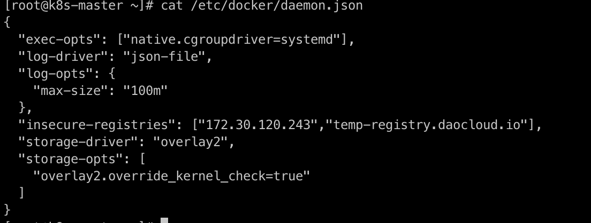
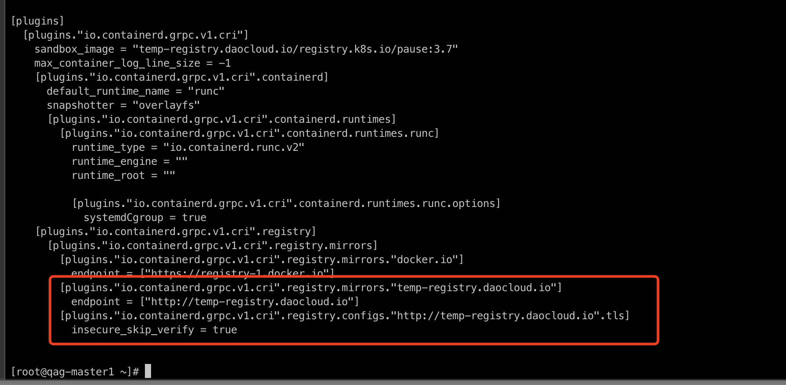

容器管理常见问题 ¶
本页面列出了一些在容器管理（Kpanda）中可能遇到的问题，为您提供便利的故障排除解决办法。
- 容器管理和全局管理模块的权限问题
- Helm 安装：
- 工作负载 -> 删除节点亲和性等调度策略后，调度异常
- 应用备份：
- 卸载 VPA、HPA、CronHPA 之后，为什么对应弹性伸缩记录依然存在
- 为什么低版本集群的控制台打开异常
- 创建和接入集群：
权限问题 ¶
有关容器管理和全局管理模块的权限问题，经常有用户会问，为什么我这个用户可以看到这个集群，或者为什么我看不到这个集群，我们应该如何排查相关的权限问题？分为以下三种情况：
-
容器管理模块的权限分为集群权限、命名空间权限。如果绑定了用户，那该用户就可以查看到相对应的集群及资源。具体权限说明，可以参考集群权限说明。

-
全局管理模块中用户的授权：使用 admin 账号，进入 全局管理 -> 用户与访问控制 -> 用户 菜单，找到对应用户。在 授权所属用户组 标签页，如果有类似 Admin、Kpanda Owner 等拥有容器管理权限的角色，那即使在容器管理没有绑定集群权限或命名空间权限，也可以看到全部的集群，可以参考用户授权文档说明

-
全局管理模块中工作空间的绑定：使用账号进入 全局管理 -> 工作空间与层级 ，可以看到自己的被授权的工作空间，点击工作空间名称
-
如果该工作空间单独授权给自己，就可以在授权标签页内看到自己的账号，然后查看资源组或共享资源标签页，如果资源组绑定了命名空间或共享资源绑定了集群，那该账号就可以看到对应的集群
-
如果是被授予了全局管理相关角色，那就无法授权标签页内看到自己的账号，也无法在容器管理模块中看到工作空间所绑定的集群资源

-
Helm 安装的问题¶
-

如图所示，容器管理会自动创建启动一个 Job 负责具体应用的安装工作，在 v0.6.0 版本中由于 job resources 设置不合理，导致 OOM， 影响应用安装。该 bug 在 0.6.1 版本中已经被修复。如果是升级到 v0.6.1的环境，仅仅会在新创建、接入的集群中生效， 已经存在的集群需要进行手动调整，方能生效。
点击查看如何调整脚本
- 以下脚本均在全局服务集群中执行
- 找到对应集群，本文以 skoala-dev 为例,获取对应的 skoala-dev-setting configmap
-
更新 configmap 之后即可生效
kubectl get cm -n kpanda-system skoala-dev-setting -o yaml apiVersion: v1 data: clusterSetting: '{"plugins":[{"name":1,"intelligent_detection":true},{"name":2,"enabled":true,"intelligent_detection":true},{"name":3},{"name":6,"intelligent_detection":true},{"name":7,"intelligent_detection":true},{"name":8,"intelligent_detection":true},{"name":9,"intelligent_detection":true}],"network":[{"name":4,"enabled":true,"intelligent_detection":true},{"name":5,"intelligent_detection":true},{"name":10},{"name":11}],"addon_setting":{"helm_operation_history_limit":100,"helm_repo_refresh_interval":600,"helm_operation_base_image":"release-ci.daocloud.io/kpanda/kpanda-shell:v0.0.6","helm_operation_job_template_resources":{"limits":{"cpu":"50m","memory":"120Mi"},"requests":{"cpu":"50m","memory":"120Mi"}}},"clusterlcm_setting":{"enable_deletion_protection":true},"etcd_backup_restore_setting":{"base_image":"release.daocloud.io/kpanda/etcdbrctl:v0.22.0"}}' kind: ConfigMap metadata: labels: kpanda.io/cluster-plugins: "" name: skoala-dev-setting namespace: kpanda-system ownerReferences: - apiVersion: cluster.kpanda.io/v1alpha1 blockOwnerDeletion: true controller: true kind: Cluster name: skoala-dev uid: f916e461-8b6d-47e4-906e-5e807bfe63d4 uid: 8a25dfa9-ef32-46b4-bc36-b37b775a9632修改 clusterSetting -> helm_operation_job_template_resources 到合适的值即可， v0.6.1 版本对应的值为 cpu: 100m,memory: 400Mi
-
Helm 安装应用时，无法拉取 kpanda-shell 镜像
使用离线安装后，接入的集群安装helm应用经常会遇到拉取 kpanda-shell 镜像失败，如图：

此时，只需要去集群运维-集群设置页面，高级配置标签页，修改 Helm 操作基础镜像为一个可以被该集群正常拉取到的 kpanda-shell 的镜像即可。

-
Helm Chart 界面未显示最新上传到对应 Helm Repo 的 Chart

此时，只需要去 Helm 仓库刷新对应的 Helm 仓库即可。

-

此时，只需要去自定义资源页面，找到 helmreleases.helm.kpanda.io CRD，然后找到对应的 helmreleases CR 删除即可。


调度的问题 ¶
在通过 工作负载 ，删除节点亲和性等调度策略后，调度异常

此时，可能是因为策略没有删除干净，点击编辑，删除所有策略。


应用备份的问题¶
-
Kcoral 检测工作集群 Velero 状态的逻辑是什么？

- 工作集群在velero命名空间下安装了标准的velero组件
- velero 控制面 velero deployment 处于运行状态，并达到期望的副本数
- velero 数据面 node agent 处于运行状态，并达到期望副本数
- velero 成功连接到目标 MinIO（BSL 状态为 Available）
-
在通过 Kcoral 跨集群备份还原应用的时候，在恢复页面中，Kcoral 会帮助用户筛选可以执行跨集群还原的集群列表，逻辑如下：

- 过滤未安装 Velero 的集群列表
- 过滤 Velero 状态异常的集群列表
- 获取与目标集群对接了相同 MinIO 和 Bucket 的集群列表并返回
所以只要对接了相同的 MinIO 和 Bucket，Velero 处于运行状态，就可以跨集群备份（需要有写入权限）和还原。
-
Kcoral 进行应用备份操作，同时备份相同标签的 Pod 和 Deployment 后，还原备份后出现 2 个 Pod。
出现这种现象的原因是：还原时，由于修改了 Pod 标签，导致其标签与其备份时的父资源 ReplicaSet / Deployment 标签不匹配，故还原时出现2倍数量 Pod。
为了避免出现以上这种情况，尽量避免修改关联资源中的某一资源的标签。
日志的问题 ¶
卸载 VPA、HPA、CronHPA 之后，为什么对应弹性伸缩记录依然存在？
虽然通过 Helm Addon 市场中把对应组件卸载，但是应用弹性伸缩界面相关记依然在，如下图所示:

这是 helm uninstall 的一个问题，它并不会卸载对应的 CRD，因此导致数据残留，此时我们需要手动卸载对应的 CRD , 完成最终清理工作。
控制台的问题 ¶
为什么低版本集群的控制台打开异常？
在 kubernetes 低版本（v1.18以下）的集群中，打开控制台出现 CSR 资源请求失败。打开控制台的时候， 会根据当前登录用户在目标集群中通过 CSR 资源申请证书，如果集群版本太低或者没有开启此功能 Controller， 会导致证书申请失败，从而无法连接到目标集群。
申请证书流程请参考 Kubernetes 官网文档。
解决办法：
-
如果集群版本大于 v1.18，请检查 kube-controller-manager 是否开启 csr 功能，确保以下的 controller 是否正常开启
-
低版本集群目前解决方案只有升级版本
创建和接入集群的问题¶
-
创建的集群分为两种情况：
- 创建失败的集群：在创建集群的过程中，因为参数设置错误导致集群创建失败，这种情况可以在安装失败的集群选择重试，然后重新设置参数重新创建。
- 已经成功创建的集群：这种集群可以先卸载集群，然后重新创建集群。卸载集群需要关闭集群保护的功能才能卸载集群。


-
离线环境接入的集群，在安装插件之前，需要先配置 CRI 代理仓库，以忽略 TLS 验证（所有节点都需要执行）。
-
修改文件
/etc/docker/daemon.json -
加入 "insecure-registries": ["172.30.120.243","temp-registry.daocloud.io"],
修改之后内容如下：

-
重启 docker
-
修改
/etc/containerd/config.toml -
修改之后内容如下：
[plugins."io.containerd.grpc.v1.cri".registry.mirrors."docker.io"] endpoint = ["https://registry-1.docker.io"] [plugins."io.containerd.grpc.v1.cri".registry.mirrors."temp-registry.daocloud.io"] endpoint = ["http://temp-registry.daocloud.io"] [plugins."io.containerd.grpc.v1.cri".registry.configs."http://temp-registry.daocloud.io".tls] insecure_skip_verify = true
-
注意空格和换行符，确保配置正确，修改完成之后执行
-
-
创建集群时，在高级设置中启用 为新建集群内核调优 ，集群创建为什么会失败
-
检查内核模块 conntrack 是否加载，执行如下命令：
-
如果返回为空，表示没有加载。重新加载，执行如下命令：
Note
如果内核模块进行了升级操作，也会导致集群创建失败。
-
-
集群解除接入后，
kpanda-system命名空间一直处于 Terminating 状态。请检查 APIServices 服务状态是否正常，查看命令如下。如果当前状态为 false，请尝试修复 APIServices 或删除该服务。